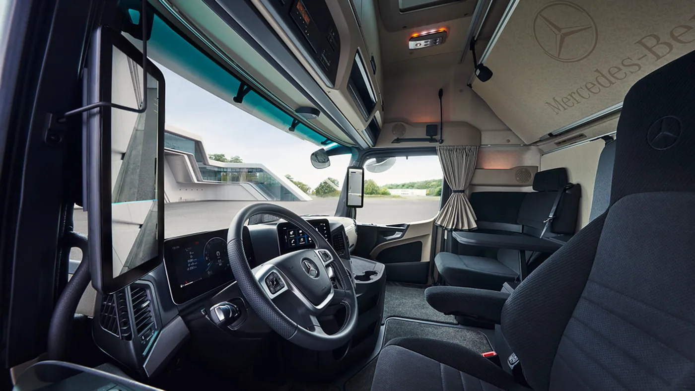

El Mercedes-Benz Actros L ProCabin recibió el premio Fleet Truck of the Year 2026 de los Motor Transport Awards. Daimler Truck UK difundió la noticia el 10 de septiembre de 2026, destacando la valoración del jurado sobre economía de combustible, confort y equipamiento de seguridad.
La categoría considera tractores 4x2 o 6x2 de hasta 500 hp y evalúa el conjunto ofrecido a una flota, incluido el respaldo comercial y de servicio. Según el comunicado, también se reconocieron mejoras en la red británica y el suministro de repuestos. El premio corresponde a ese mercado y a esos criterios.
La comunicación no publica un porcentaje de ahorro aplicable a cualquier operación ni presenta una nueva versión argentina. El reconocimiento llega durante el año del trigésimo aniversario del Actros y ofrece una oportunidad para mirar qué factores pesan más allá de la ficha del vehículo.
Qué aporta un premio a una decisión de compra
Análisis de Zabala Repuestos. Un reconocimiento puede orientar la atención hacia un modelo y ayudar a formular preguntas. La decisión de una empresa, sin embargo, necesita relacionar esa información con su carga, recorrido y organización.
Para un transportista argentino, lo útil es observar los criterios evaluados. Consumo, satisfacción del conductor y respaldo merecen considerarse juntos. Una comparación centrada solamente en potencia o precio deja sin explicar cómo se sostendrá el camión durante el trabajo cotidiano.
El servicio puede definir la disponibilidad
Cuando una unidad necesita atención, importa saber dónde se realizará el diagnóstico y cómo llegará la pieza correcta. Es una conversación que conviene tener antes de comprar: puntos de asistencia, horarios, procesos de consulta y documentación disponible.
No hace falta esperar una avería para comprobar la claridad de esa respuesta. Una empresa puede revisar cómo se gestionan los servicios programados, qué información recibe al retirar el vehículo y cómo se conservan los antecedentes para la siguiente intervención.

Escuchar al conductor mejora la evaluación
Quien usa el camión todos los días puede aportar observaciones sobre acceso, mandos, espacios y organización de la cabina. Conviene reunir esa información con preguntas concretas y mantenerla separada de una impresión general sobre la apariencia del vehículo.
Una prueba debería reflejar la tarea prevista tanto como sea posible. La opinión de varios conductores, acompañada por la descripción del recorrido y la configuración, aporta más contexto que una única experiencia breve. También ayuda a identificar qué formación será necesaria al incorporar la unidad.
Cómo mirar el consumo de una manera comparable
Un dato de combustible adquiere valor cuando se conoce el trabajo realizado. Carga, kilómetros y tiempos de espera permiten interpretar diferencias entre jornadas. Sin esos antecedentes, dos cifras pueden parecer equivalentes aunque describan servicios muy distintos.
Para una flota pequeña, un registro constante puede ser suficiente para comenzar. Lo importante es conservar el mismo criterio y explicar los cambios de operación. Una renovación de unidades o una modificación del circuito deben quedar visibles al revisar los resultados.
La configuración exacta sigue siendo fundamental
Un nombre comercial puede abarcar distintas variantes. Antes de consultar mantenimiento o piezas, interesa identificar chasis, equipamiento y versión. Esa precisión evita atribuir a una unidad prestaciones o componentes que corresponden a otra configuración.
En la posventa, una consulta completa facilita preparar un presupuesto y confirmar lo que hace falta verificar. La calidad de esa información tiene un efecto práctico: reduce intercambios innecesarios y permite organizar mejor el trabajo entre cliente, taller y proveedor.
Preguntas que vale la pena llevar a una demostración
- ¿La unidad mostrada coincide con la configuración ofrecida?
- ¿Qué condiciones respaldan los datos de consumo?
- ¿Cómo se organiza el mantenimiento durante el contrato?
- ¿Qué información recibe el conductor al incorporarla?
- ¿Quién atiende una consulta técnica fuera de la base?
- ¿Cómo se identifica y solicita un repuesto?
El premio al Actros L ProCabin pone en primer plano una evaluación amplia del camión. Para el transporte argentino, esa mirada puede aplicarse a cualquier marca: relacionar la experiencia de conducción con el costo de operación y con el respaldo que permite cumplir el próximo viaje.